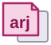

Slides
Slide decks by  Mark Crowe, made with reveal.js and
Mark Crowe, made with reveal.js and
-
Meme Bank
Film and TV quotes for intermediate memes, for presentations and training.
tinyurl.com/42m5nncm–memes.md, the slides as text
-
Final Year Projects
The habits nobody teaches you.
-
Training Needs Analysis
Purpose, benefits, methods and process. Assignment 2, module 6N3325.